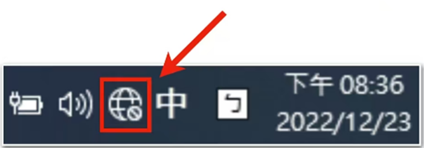

返回
欢迎查看常见问题
智慧服务，让您使用更简单

Windows连接 VPN 后网络变地球
若您连接赛盾 VPN 后发现有/无线网络图标变成了地球形状，您可以根据这篇文章解决问题
因 Windows 系統的不穩定性，连接 VPN 後桌面右下角的网络圖標可能会变成地球模样(如图下)，您可以通过以下方法解决这个问题。
PS:赛盾 VPN 下载地址：

一、Killer 网卡影响
如果您是 MSI、外星人、DELL、acer、雷蛇和Lenovo 品牌的电脑可能会因为 Killer 网卡设置导致赛盾VPN 无法正常使用，您可以通过《Killer网卡需要做的特别配置》这篇文章了解如何解决问
二、Intel Connectivity Network Service /Intel Connectivity Service 不兼容问题
若电脑存在此服务可能会出现兼容性问题，您可以根据以下步骤进行设置:
1.按 Windows+R服务”的对话框
2.在输入框中输入 Services.msc 按回车，弹出
3.找到 Intel Connectivity Network Service /Intel Connectivity Service /IntelConnect Service，双击进入对应服务属性操作面板
4.找到"服务状态"选择 停用，"启动类型"下拉菜单选择“禁用”;
5.点击“应用”後，重启设备
6.回到“服务”的对话窗，查看 Intel Connectivity Network Service /Intel Connectlvty service /intelConnect Service 是否禁用成功
7.禁用成功即可
三、戴尔电脑的特殊设置
戴尔电脑中一些设置会影响 VPN 的连接使用，您可以根据以下步骤解决问题
1.按 Windows+R
2弹出”服务”的对话框 Services.msc，按回车弹出”服务”的对话框
3.找到下面三個服務 “ExpressConnect Ap Selector Service“ExpressConnect Dynamic BandwidthManagement“ExpressConnect Network Service
4.双击进入操作面板
5.找到”服务状态"选择停用"启动类型"下拉菜单选择“禁用”;
6.点击“应用”重启设备
注:若您在下载和使用过程中有任何问题，您随时可以发送邮件给 {{kfEmail}}，将由专业的客户服务人员帮助您获取到最新版本的软件。